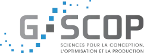
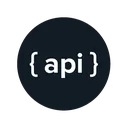
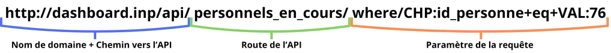

Étude de cas · Expériences en stage
Deux stages, deux applications.
Un stage de première année chez Hardis Group (équipe Reflex) et un stage de deuxième année au laboratoire G-SCOP. Dans les deux cas, j’ai conçu une application à partir d’un besoin réel.
Stage de première année
Hardis Group · équipe Reflex
Entreprise spécialisée dans les services numériques et la gestion de la chaîne d’approvisionnement.
- Société française
- Créée en 1984. Son nom reprend les initiales des départements régionaux : Haute-Savoie, Ain, Rhône, Drôme, Isère, Savoie.
- Chiffre d’affaires
- 186,6 millions d’euros en 2023. Siège social à Seyssinet-Pariset.
- Implantations
- Équipes à Grenoble, Paris, Lyon, Lille, Nantes et Bordeaux, et filiales en Espagne, au Benelux, en Pologne et en Italie.
01Mission
Moderniser l’interface de l’outil Reflex
Une application existe déjà en ligne de commande, mais elle n’est pas facile à utiliser.
Objectif : réaliser une interface graphique en Python qui simplifie l’utilisation du logiciel et ajoute quelques fonctionnalités.
L’application appelle des interfaces : des scripts qui récupèrent certaines valeurs dans une base de données cliente. Elle sert à exporter des données précises au format CSV ou Excel.
02Outils
03Pages de l’application
Permet d’appeler les différentes interfaces.
Permet d’accéder aux différentes fenêtres.
Trois types pris en charge : MySQL, Oracle et DB2.
Permet de choisir les codes et valeurs à récupérer. (Facultatif)
Permet de filtrer avec les codes de contexte recherchés. (Facultatif)
04Fonctionnalités
Appelle les interfaces ensemble ou une à la fois.
Ajoute une condition SQL à une interface pour obtenir des données plus précises.
Permet de choisir le format (CSV ou Excel) et le chemin d’exportation des données.
05Difficulté & solution
Une application qui se fige
Lorsqu’on appelle une interface, l’application traite beaucoup de données et se fige, car elle ne peut exécuter qu’une tâche à la fois.
Solution : les threads
Les données passent par un signal qui envoie les informations à l’interface. Elle les récupère et échange par ce « tunnel ».
Limite d’un seul thread
Quand le même thread est appelé plusieurs fois pour différentes interfaces, les informations ne concordent plus et les données récupérées sont mélangées.
Multi-threading
J’ai mis en place un multi-threading avec un signal par interface. Plusieurs tâches s’exécutent en parallèle, ce qui améliore les performances de l’application.
06Évolutions possibles
- Ajout de nouvelles interfaces
- Historique des précédentes bases de données utilisées
Ces évolutions n’ont pas été réalisées pendant le stage.

Stage de deuxième année
Laboratoire G-SCOP
Centre de recherche pluridisciplinaire spécialisé dans la conception et l’optimisation des systèmes de production.
- Création
- Créé en 2007. G-SCOP signifie « Grenoble — Sciences pour la Conception, l’Optimisation et la Production ».
- Statut
- Unité mixte de recherche avec 3 tutelles : Université Grenoble Alpes, Grenoble INP et CNRS.
- Effectifs
- Environ 170 personnes : chercheurs, doctorants et personnels en support à la recherche.
01Mission
Créer un tableau de bord pour les chefs d’équipe
Plusieurs applications sont utilisées au laboratoire. Pour aider les chefs d’équipe au quotidien, il faut centraliser les données importantes dans un tableau de bord.
Le site web centralise et visualise plusieurs informations à destination des chefs d’équipe : la composition de leur équipe et leurs publications scientifiques, sous forme de graphiques et de tableaux détaillés.
Les captures ci-dessous utilisent de fausses données.
02Outils

03Pages du tableau de bord
Offre une vue globale sur les différentes informations.
Liste les membres de l’équipe et leurs détails.
Affiche les informations utiles sur un membre de l’équipe.
Regroupe les informations les plus importantes et peut être exportée.
04Fonctionnalités
Permet de télécharger le contenu dans plusieurs formats.
Précisent les données affichées.
Récupère la liste des e-mails de son équipe.
Donne des conseils ou des informations pour faciliter l’utilisation.
05Difficulté & solution
Récupérer les données par API
Le plus simple pour récupérer les données est d’utiliser des API, en filtrant les données directement dans l’URL.

La limite de requêtes
Le serveur de développement n’impose aucune restriction sur le nombre de requêtes. Le serveur de production en autorise 5 au maximum, alors que le chargement de la page en effectuait 13.
Solution
Je n’effectue plus qu’une seule requête globale, sans filtre, pour récupérer toutes les informations nécessaires. Le tri et le filtrage sont ensuite réalisés côté client en JavaScript.
06Évolutions possibles
- Ajout des données réelles
- Liens vers d’autres applications (tickets, missions…)
- Affichage de certains widgets en fonction de l’équipe
Ces évolutions n’ont pas été réalisées pendant le stage.